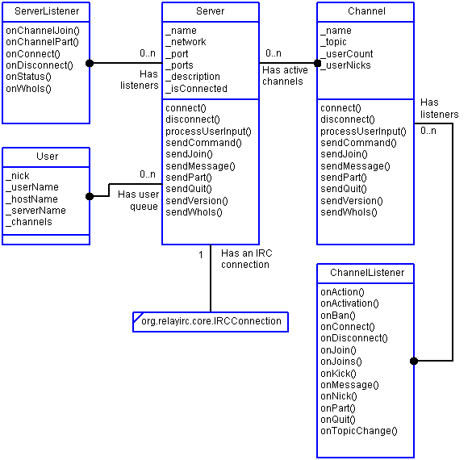

|
|||||||||
| PREV PACKAGE NEXT PACKAGE | FRAMES NO FRAMES | ||||||||
See:
Description
| Interface Summary | |
| ChannelListener | Implement this interface to listen to channel events incuding messages, joins, parts, bans and kicks. |
| ChannelSearchListener | Inteface for listening to progress of a channel search. |
| ChatOptionListener | Currently not used: ChatOption provides standard beans property change support and thats good enough for now. |
| IChatObject | Interface for a chat data object, created for use by PropDlg and PropPanel. |
| ServerListener | Implement this interface to listen for server connection and disconnection, channel joins and parts and status messages. |
| Class Summary | |
| Channel | An IRC channel class that includes methods for joining, parting, kicking, banning, adding/removing channel listeners and property change support. |
| ChannelAdapter | Provides a default do-nothing implementation of ChannelListener. |
| ChannelEvent | Event fired by a channel. |
| ChannelSearch | Channel searcher. |
| Server | Manages a connection to an IRC server and handles incoming messages by creating channel objects, routing messages to channel objects and routing events to server listeners. |
| ServerAdapter | Provides a default do-nothing implementation of ServerListener. |
| ServerEvent | Event fired by a Server. |
| User | Represents the current user or a user who has been queried via WHOIS. |
The org.relayirc.chatengine provides higher level IRC classes such as Server, Channel and User. Depends on the org.relayirc.core and org.relayirc.util packages as well as a Java 1.1 compatible subset of the Java class libraries. With this package, you can work at a higher level of abstraction. The chat engine package provides classes that represent IRC servers, channels and users. You can choose to listen to server-level messages or to listen to an individual channel. The major players in the chat engine package are shown and discussed below.

|
|||||||||
| PREV PACKAGE NEXT PACKAGE | FRAMES NO FRAMES | ||||||||